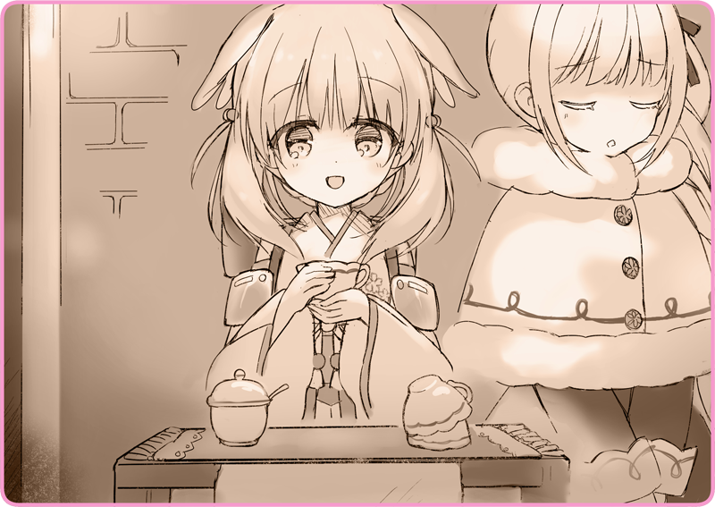

Sau một đêm, bầu trời xanh một lần nữa lại trải dài bất tận.
Tuyết đã ngừng rơi, nhưng cảnh quan vẫn phủ trong gam màu bạc của tuyết.
Những làn hơi nước trắng không ngừng phun ra từ ống khói của Haizakura.

“C-Có ai không ạ…”
Trước mặt Lilia là một chiếc bàn nhỏ lôi từ trong phòng ra.
Đặt trên đó là một chồng cốc uống trà úp ngược và một lọ đường lớn.
Tờ quảng cáo viết lên mặt sau của tấm bản đồ, cho cảm giác như mới được làm ra cấp tốc đầy ngẫu hứng.
“... Này, Haizakura.”
Mình vừa nghĩ ra một ý rất hay, cùng làm việc nào… là những gì cô bé này đã nói.
Dù chỉ trong một khắc ngắn ngủi, nhưng cô nghĩ mình đã sai lầm khi tin lời cô bé.
Vừa sáng ngày em đã lấy ra một chiếc nồi tráng men rồi vào bếp lạch cạch nấu nướng, thành thử cô cũng tò mò không biết em đang làm gì.
“K-Kể chuyện gì?”
“Chuyện đấy thì tớ cũng biết, cơ mà cậu nghĩ một cốc thì bán được bao nhiêu chứ?”
“Với cả, tớ đã bảo rồi mà. Tớ không muốn gây chú ý—”
Vừa lúc cô đang ghé tai thì thầm với em thì có một vị khách tới.
“Ối chà, trông ngon quá nhỉ.”
Đó là một người đàn ông mập mạp nom có vẻ phúc hậu. Bộ râu che phủ cả khuôn miệng, có khả năng ông là người Altaria chính gốc.
“Cho ta xin một cốc nhé.”
Em nhận tiền với nụ cười trên môi.
“Tớ làm á?”
Cô cầm cốc trà lên và bước ra sau lưng Haizakura.
Em bảo rằng đã đổ trà thảo mộc mật ong vào thùng chứa nhiên liệu dự trữ để trà luôn được giữ ấm ở nhiệt độ thích hợp. Chẳng rõ cứ thế đổ ra uống lại có được không, nhưng cô đã thôi không muốn nghĩ về chuyện đó nữa rồi.
“... Làm thế này đã đúng chưa nhỉ...”
Cô vặn cái van thoát nước và đổ trà vào cốc.
Một màu hồng ngọc đậm. Mùi việt quất đỏ ngòn ngọt hòa với mùi nhục đậu khấu quả tình kích thích khứu giác.
“Mời ngài ạ…”
Cô hạ tầm nhìn xuống và đưa cốc trà cho người đàn ông kia.
Ông cầm chiếc cốc bằng cả hai tay, tận hưởng hơi ấm một lát, rồi thưởng trà trông thật ngon miệng.
“Aa… như được hồi sinh ấy. Cảm ơn nhé.”
“Tất nhiên là có rồi. Tiện thể…”
Hai bên nhìn nhau một lúc. Lilia quấn khăn quàng che đi cả khuôn miệng, cố gắng hành xử tự nhiên.
“Cô bé đây là Hình nhân nhỉ?”
“Cháu tới đây từ tận phương Đông sao?”
“Ưm, xin lỗi, cậu ấy là…”
Không muốn bị chất vấn thêm nữa, Lilia quyết định xen nào.
“À, ta cũng xin lỗi. Chỉ là ta hơi hoài niệm một chút.”
“Ta rất thích đi xem ca kịch. Tại đó có một Hình nhân chuyên dụng để múa hát.”
Trước những lời ấy, Lilia ngỡ như con tim mình vừa bị bóp nghẹt.
Cô liền giả vờ lau cốc để quay lưng về phía người đàn ông.
“Đó là điểm đặc biệt của Đoàn ca kịch nữ Levaljak đấy. Thiếu nữ và Hình nhân tạo thành một bản hòa âm tuyệt vời.”
“Tiếc nỗi là gần đây họ biểu diễn hơi ít… À đúng rồi, cháu có hát được không?”
“Ừ. Lâu lắm rồi, ta muốn nghe lại.”
“Để xem nào,
Hồ và Thiên nga thì sao?”
Haizakura hít thật sâu lấy một luồng hơi lạnh.
Đoạn, em từ từ nhắm mắt, đặt hai tay lên ngực.
Dưới bầu trời mùa đông, em ngân cao giọng hát.
“...... Hựự…”
Một bài hát lạc điệu đến nỗi chẳng có chút âm sắc gì cả vang lên.
“T-Từ từ đã, Haizakura!”
“Cậu hát lệch nhịp quá rồi. Ngay cái lúc bắt đầu vào bài của cậu đã sai luôn rồi ấy.”
“Aaa, trời ạ… đây, hát theo tớ xem.”
Lilia khẽ đằng hắng ra hiệu.
Theo đó, Haizakura bắt chước mà cất giọng.
“... Chà chà.”
Không ngoài mong đợi ở một Hình nhân, Haizakura đã điều chỉnh được âm điệu của mình chỉ sau một vài nỗ lực bắt nhịp theo Lilia. Ông khách kia cũng đang trầm trồ, chừng như thán phục.
“Cứ hát tiếp đi.”
““～～～～～♪ ～～～～～♪ ～～～～～♪””
Tiếng hát câu ca du dương cứ thế mà ngân vang.
Với Lilia mà nói, đây cũng là một trải nghiệm thân thuộc.
Hồi còn ở trong đoàn nhạc, cô đã từng đồng ca với nhóm Hình nhân như thế này.
Mặc dù đối tác của cô không tệ như Haizakura.
““～～～～～♪””
Ánh mắt giao nhau, hai cô gái cùng cười.
Nụ cười của Haizakura rạng ngời hân hoan, khiến Lilia vô tình ngân cao giọng hơn nữa.
Pạch pạch pạch pạch.
Ca từ vừa dứt đã ngay lập tức nhường chỗ cho một cơn mưa pháo tay rần trời.
Cả hai mới nhận ra, người nghe hát không chỉ có mỗi ông khách trước mặt nữa.
Cả một đám đông đang đứng xung quanh ông, tất thảy đều đang vỗ tay nhiệt thành.
“Tuyệt vời! Mọi người cùng mua trà thảo mộc để thay lời cảm ơn màn trình diễn của hai cô bé này nào!”
Nghe em nói vậy, khách hàng lũ lượt kéo đến.
“Quý khách vừa mới gọi món… A, ngài đâu cần phải trả nhiều tiền thế này… Dạ? Tính cả phần hát nữa ấy ạ?”
Thương vụ bán trà thảo mộc phất lên như diều gặp gió.
Thậm chí có những khách hàng còn boa thêm tiền, gặt hái đại thành công.

 “Ngài kể là, trẻ em ở Altaria thường bán trà thảo mộc mật ong để kiếm tiền tiêu vặt mùa đông. Vừa hay đúng lúc trời đang lạnh, thứ này sẽ giúp sưởi ấm cả cơ thể lẫn tâm hồn đó.”
“Ngài kể là, trẻ em ở Altaria thường bán trà thảo mộc mật ong để kiếm tiền tiêu vặt mùa đông. Vừa hay đúng lúc trời đang lạnh, thứ này sẽ giúp sưởi ấm cả cơ thể lẫn tâm hồn đó.”